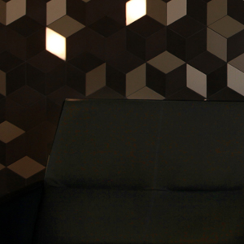
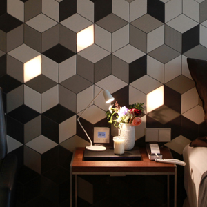
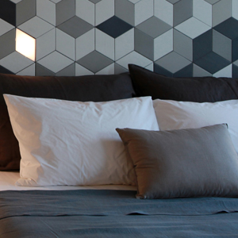

About
--------------------------------------------------------------------------
IT IS BEING THERE AS IT HAS BEEN LONG BEFORE.
Nothing is changed but sometimes the surroundings make it look different.
It is difficult to guess what the eaves over the grape myrtle look like.
It makes the surrounding gardens and the void look special.
Grazing along small trees and tender greenery reaches the building.
Gently reflected light comes like the wind.
The bricks become the wall and make the entrance,
and deep and long curtains replace the front door just like embracing you.
When you open this, it leads you to a different space.
You can see it at a glance but it is difficult to know what it is as it is shown.
Passing the counter formed like greeting someone, you will surely look back.
It’s saying ‘Welcome you’.
Soft carpet, solid marble, anechoic wallpaper;
these materials which have come across reaching here seem to be changed to the different appearance in the memories.
A curving corridor extends over the sense continuously; Deja vu and a little dizziness.
It is natural but everybody can reach the door without failure. Finally, the door is open.
Every room greets gladly all the conditions coming in.
The room has been set and it is filled with every functional element for being a room.
The materials meet and part as a familiar but a new waywithout forgetting their nature.
The rodded joint which is made precisely on the hard surface looks like a firm handshake between the materials.
It is a warm hug.
  
WOOD AND STONE WHICH ARE FAMILIAR WITH AND OLD AS MUCH AS HUMAN HISTORY CONSTITUTE THE MAJORITY OF THE ROOMS.
Here, these two can be the backdrop of each other and also the protagonist themselves. This warm and soft wood, at first, can be useful small table around a cozy bed or the comfortable backrest or the straight foot stool to put your feet on. But then, without realizing, it may wrap the body gently as the guidance of the wall towards the bathroom and it may be with the bedroom as a thin windowsill of the balcony which is full of wind and sunshine.
Here, these two can be the backdrop of each other and also the protagonist themselves. This warm and soft wood, at first, can be useful small table around a cozy bed or the comfortable backrest or the straight foot stool to put your feet on. But then, without realizing, it may wrap the body gently as the guidance of the wall towards the bathroom and it may be with the bedroom as a thin windowsill of the balcony which is full of wind and sunshine.

-
2015 by HULAHULA HOSTES. Proudly created with Group 1